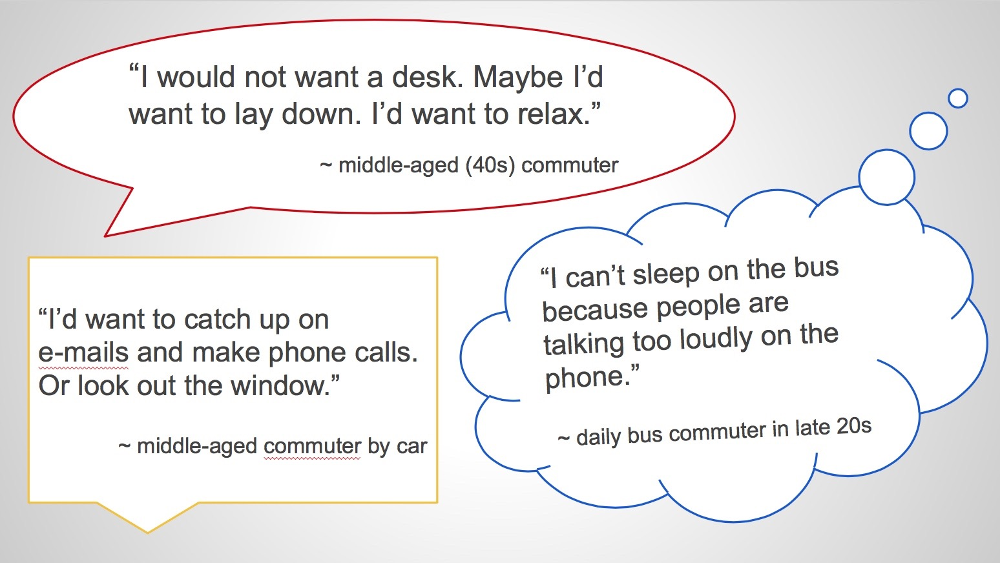
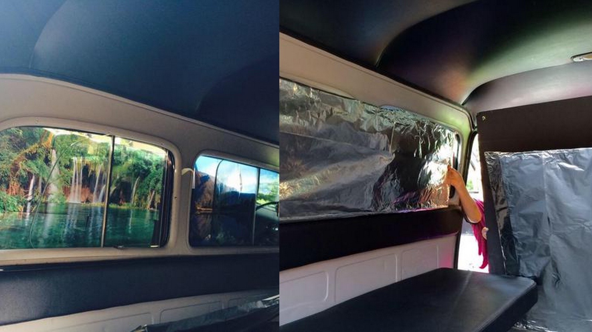
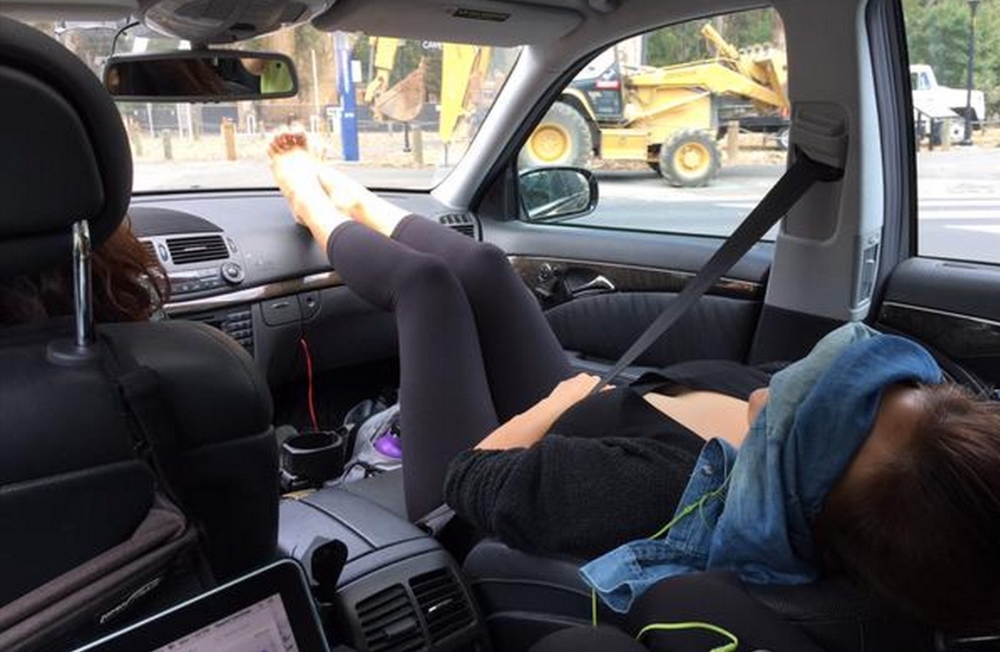
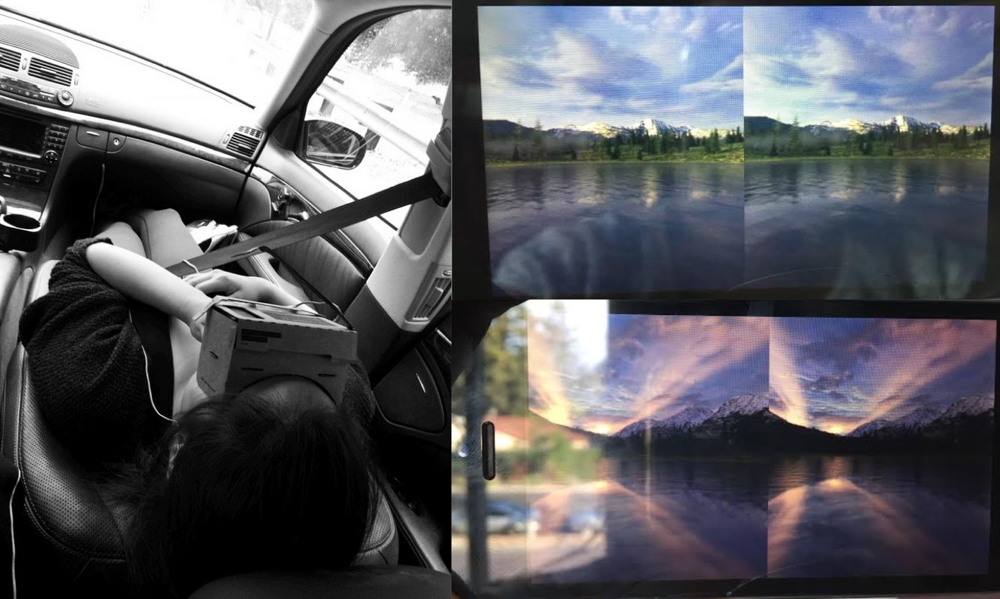
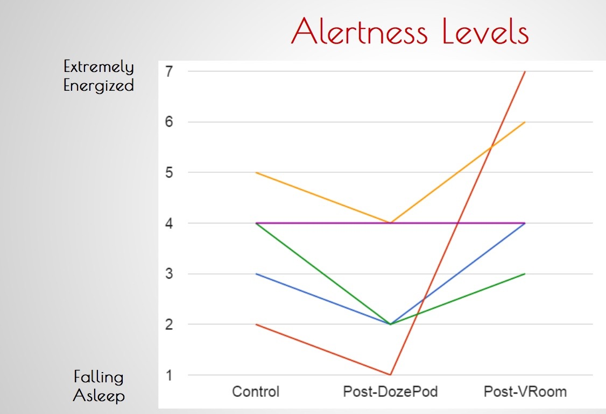

Designing Calm
Design Thinking
Project Goal
In 3 weeks, redesign the commute experience for medium-distance commuters assuming autonomous cars are the common method of transportation. This was part of CS377D: Designing Calm under the d.school, Stanford's Institute of Design, and we partnered with Renault Innovation Silicon Valley, the Renault-Nissan Alliance Research Office.
Collecting Data
Two other Stanford students and I set out to tackle this broad design challenge by scoping for information and interviewing commuters. To see what challenges commuters in general faced and amass as much user data as possible, we sent out a survey and publicized it on social media platforms.
In it, we asked participants to imagine a world without commuting, leaving the involvement of autonomous cars a secret to avoid biasing their answers. Then, we inquired what activities they would want to do if given more time in the morning to see what mattered to people in the time between waking up and driving to work. We also asked participants to provide a description of their commute experiences, both positive and negative, to clue us in on which experiences to enhance and which ones to rectify.
Research Findings
Our group researcher sent out a survey link on a website, and we received over 200 responses in one week. Based on their responses, we categorized the top three stressors or challenges commuters faced when driving:
- 51% - negativity towards bad drivers
- 43% - stress about running late for work
- 39% - traffic
In addition, given extra time in the morning, 75% of commuters said they'd sleep in. Other common responses were "watch the news," "eat breakfast," or "exercise."
Our final step in conducting preliminary research was to interview real commuters about their transportation experience. It was time to find people we would actually be designing for and empathize with their needs.
Reframing the Question
All of these findings spoke to one main topic, that the stress comes mainly from distractions on he road. Combining this insight with the fact that many people expressed interest in sleeping, we reframed our design task as such:
"How might we remove commuters from environmental stressors on the road that makes them feel relaxed on their way to work?"
Now that we had a narrow angle to proceed, it was time to prototype an experience.
Prototype 1: The Infinity Room
With prototype 1, we aimed to isolate the passenger from the outside environment and transport them into a different space. To achieve this, we chose to cover up the windows.
For Test A, we covered the windows with scenic nature images to aid mental relocation to another place, invited passersby to step into the car, played them two soundtracks (30 seconds highway traffic, 30 seconds tropical rainforest noise), and asked them to imagine driving from one place to another.
For Test B, we covered the windows with reflective material to create the sense of space (building off the idea of the infinity room) and repeated the process for Test A.
Our biggest finding from this round of user testing was that covering the windows made users feel trapped and claustrophobic, which brings us to prototype 2.
Prototype 2: The DozePod
Focusing less on visual manipulation and more on the relaxing experience, we carried out two more trials.
In the first, we drove users around in the passenger seat for 5 minutes, with no instruction, allowing the Spire, a breathing rate tracker, to collect the user's initial breathing rate.
In the second, we covered their eyes with a blindfold, inserted earbuds connected to calming ocean sounds, and reclined their seat, where the Spire continued to record their respiratory rate.
Our most significant finding from this round was that our tactics made users groggy, sleepy, and too relaxed if they were commuting to work in the morning, preparing to start their day. A round of revision was necessary!
Prototype 3: VRoom
Introducing Google Cardboard into the scene! We need something to wake commuters up so that they'd be energized and ready to approach their day of work. This time, we drove users around in the passenger seat for 10 minutes.
For the first 5 minutes, we blindfolded our users to create a dark environment, gave them calm nature sounds, and reclined their seats just like we did in prototype 2.
However, for the second 5 minutes, we removed the blindfold and switched it in for a Google Cardboard-like Virtual Reality case. This experience was intended to stimulate the senses, and it was a substitute for the idea that the VR would be projected all along the insides of the car. The VR was simply a prototype for this futuristic idea.
Quantitative Data and Measures
Polling each user to rate their alertness levels, we ended up with a rise in alertness levels after watching the VR sequence. This meant that our VR trial was successful in our achieving our goal.
Next Steps
If we were to continue seeing this project through, past the due date and beyond the limitation of class, we would focus on capturing more accurate Spire data (our data set gathered from the Spire was not completely accurate), continuing to iterate with different activities, and test on an actual autonomous car.